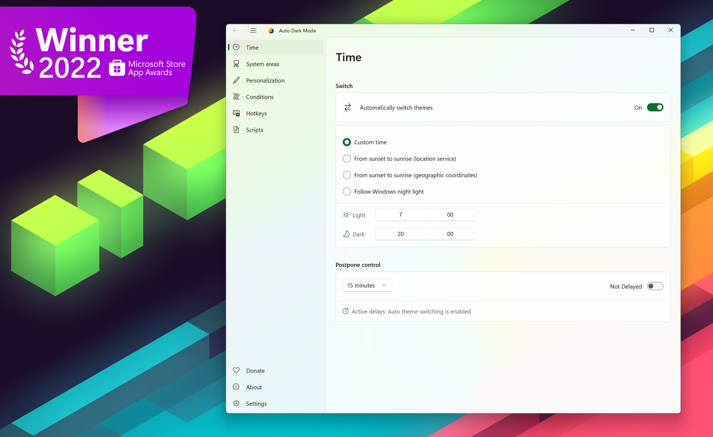
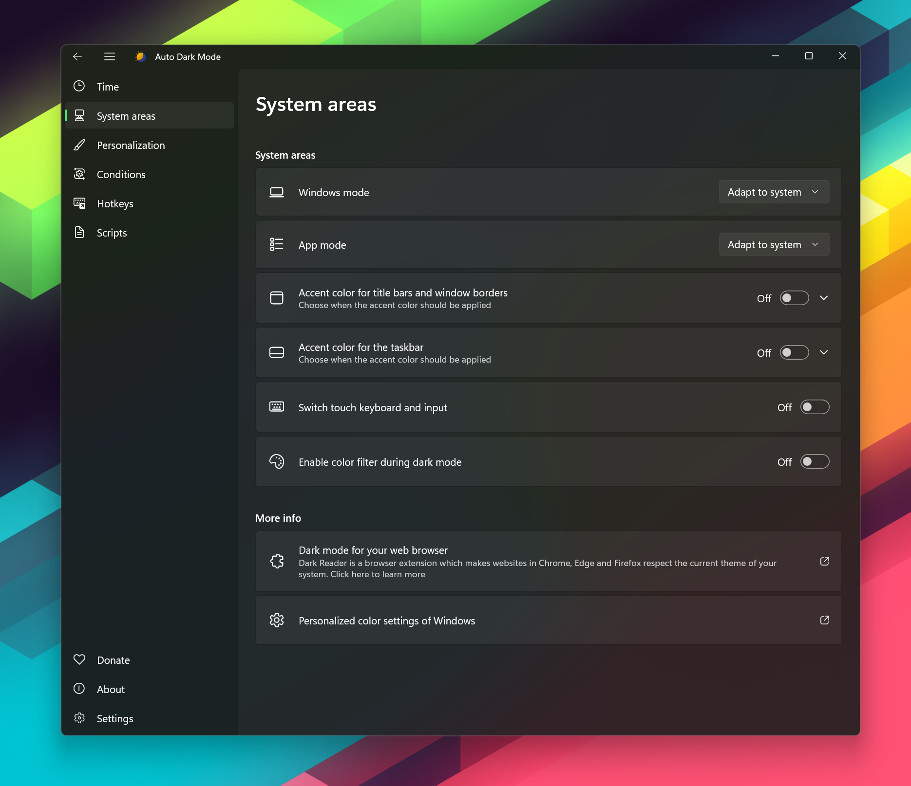
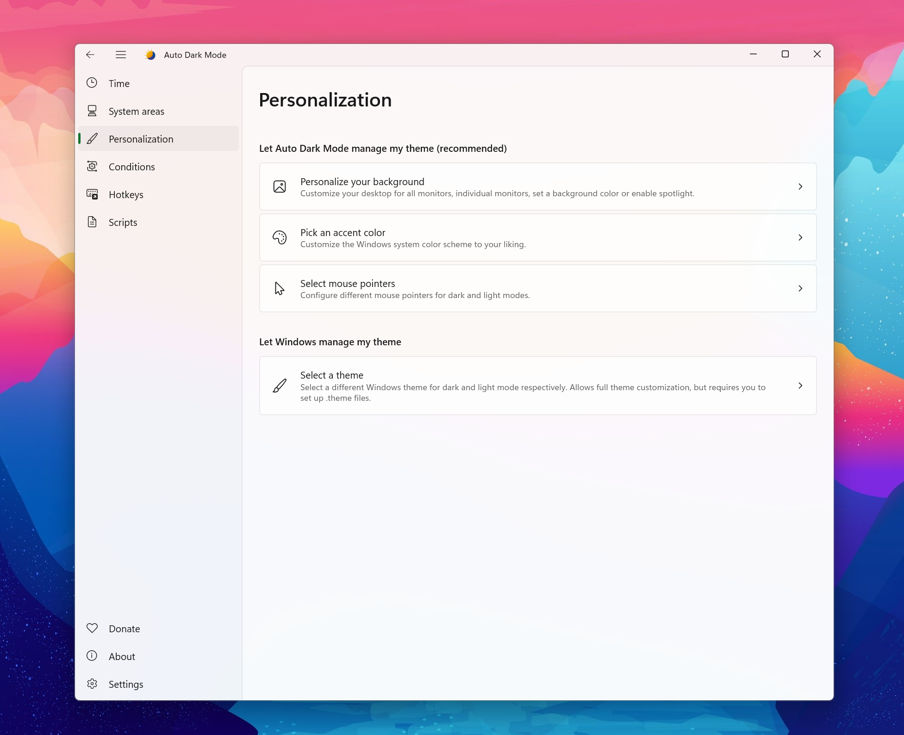
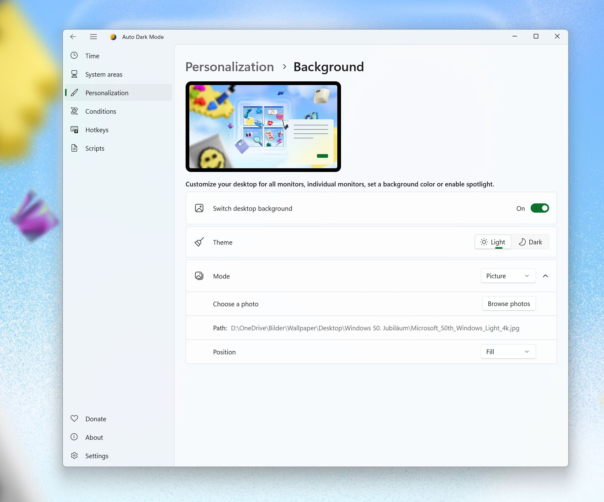
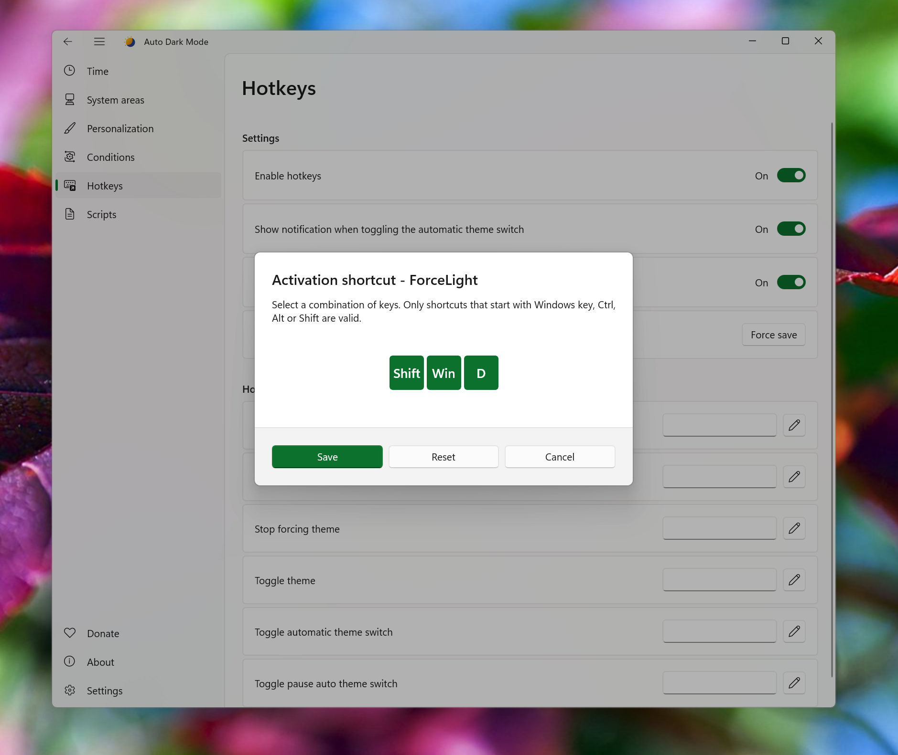
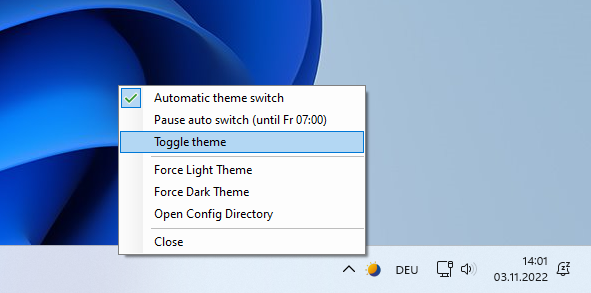

Screenshots
See it in action.







Runs on Windows 10 & 11
We switch between the dark and light theme of Windows for you.
Tired of looking at dark content while the sun is shining brightly? But at night everything is suddenly too bright? Auto Dark Mode is the solution for you!
Screenshots






Android, iOS and MacOS already offer the possibility of changing the system design based on the time of the day. We're bringing this feature to Windows on a larger scale.
Auto Dark Mode helps you to be more productive. Because you shouldn't care about changing Windows settings several times a day. As soon as the sun goes down, we'll take care of your eyes.
Because a simple design change would be too boring, Auto Dark Mode is packed with useful functions. For example, we can also change your desktop wallpaper or run custom scripts.
Features
Compatible with Windows 10* and Windows 11.
Theme switch based on sunrise and sunset.
Postpone or delay the next switch as you like.
Desktop wallpaper switch.
Mouse cursor switch.
Accent color switch.
Support for turning on/off accent color on the Taskbar and title bars.
Touch keyboard switch.
Windows .theme file switch.
Keyboard shortcuts.
Auto Dark Mode can enable the grayscale color filter of Windows.
Suitable for gamers: Doesn't switch while playing games to avoid stuttering.
Additional features for battery powered devices, like enabling dark mode on battery.
Run custom scripts.
Automatic updates.
Lightweight with clean uninstall. No admin rights needed.
* Windows 10 versions older than 22H2 are not supported
Download
The recommended way to install and stay up to date. Grab the newest version of Auto Dark Mode straight from the releases page.
Go to GitHub releasesAlso available on the Microsoft Store, with automatic updates.
Get it from Microsoft Storewinget install autodarkmode
Download Auto Dark Mode from Scoop (unofficial entry).
scoop bucket add dorado https://github.com/chawyehsu/dorado
scoop install autodarkmode
scoop bucket add nonportable
scoop install auto-dark-mode-np
Installation is pretty easy, as you only need to run the setup file provided as .exe. If you want to deploy Auto Dark Mode on multiple machines, you can use the argument /allusers /verysilent to skip the installer window.
Sometimes Windows or web browsers will show a security notice while downloading Auto Dark Mode. This is due to our lack of a developer license. You can ignore these messages.
Awards
Recognized in the Open Platform category.
Read the announcement →